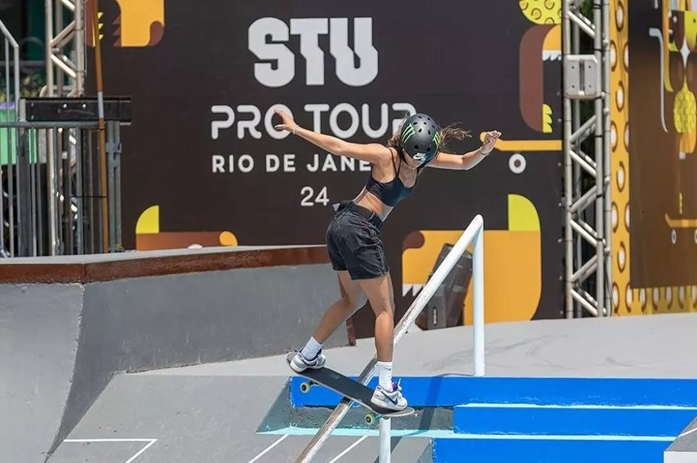

About
In 2025, the STU PRO TOUR will travel to 5 cities around the globe. To start, we return to Porto Alegre, home of some of our biggest events. The skateboarding-loving public of the city will receive the first stop of our professional league this year from March 21st to 30th.
Ranking of the skaters 2024
- Matias Dell Olio
- Gabryel Aguilar
- Ivan Monteiro
- Jhancarlo Gonzales
- Filipe Mota
- Ginwoo Onodera
News
STU announces partnership with Red Bull and creates obstacle on the track The brand sponsored STU in 2018 and is now returning in 2025, bringing back the Red Bull Athlete Zone, a space focused on athlete recovery, with physiotherapy, changing rooms, an ice bath and a common lounge.
There are only a few days left until the first stage of the STU Pro Tour in Porto Alegre. Among the Brazilians confirmed for the competition are Giovanni Viana, Raicca Ventura, Rayssa Leal, Pedro Barros, Augusto Akio, Luigi Cini, Isadora Pacheco, Pâmela Rosa, Dora Varella, Gabi Mazetto and Ivan Monteiro.
Skaters from the Rio Grande do Sul school ready to compete in the STU Pro Tour, in Porto Alegre. Names such as Sofia Godoy, Maria Lúcia, João Lucas Alves, Carlos Ribeiro and Luan de Oliveira will shine in the stage from March 21st to 30th.